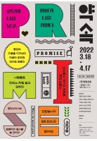
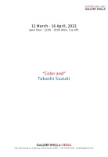
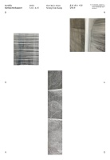
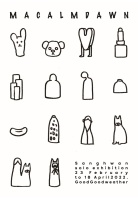

Exhibition Trip-종료예정 전시
종료예정인 전시
Back
4월까지만 만나볼 수 있는 전시를 놓치지마세요!

남북 미술품 전국순회전 "약속"
기간: 2022.03.18.(금)~2022.04.17.(일)
시간: 10:00~18:00
장소: (옛)향린교회
작가: 안정숙

타카시 스즈키: Color and
기간: 2022.03.12.(토)~2022.04.16.(토)
시간: 12:00~19:00
장소: 갤러리신라 서울

강성은: 혼자 아는 시간
기간: 2022.03.16.(수)~2022.04.15.(금)
장소: 프로젝트 스페이스 사루비아
제이슨 마틴: 수렴
기간: 2022.02.24.(목)~2022.04.16.(토)
장소: 타데우스 로팍 서울
작가: 제이슨 마틴

상환: MACALMDAWN
기간: 2022.02.23.(수)~2022.04.18.(월)
장소: 굿굿웨더
작가: 상환
포스트 네이처-친애하는 자연에게
기간: 2022.01.06.(목)~2022.04.10.(일)
장소: 울산시립미술관
작가: 제이슨 마틴
 제이슨 마틴: 수렴
제이슨 마틴: 수렴